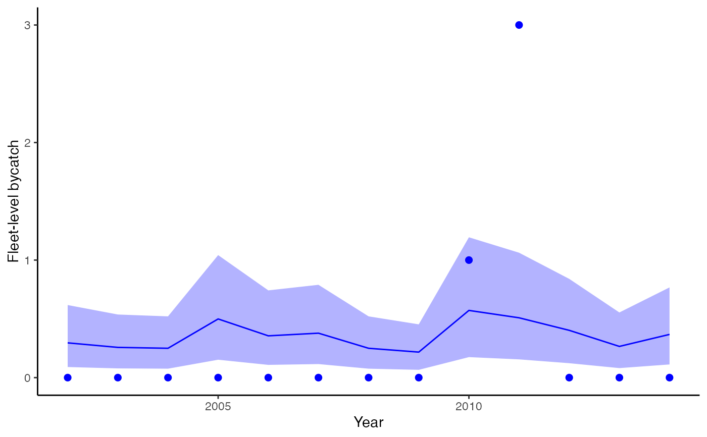

R/fitting.R
fit_bycatch.Rdfit_bycatch is the primary function for fitting bycatch models to time series of takes and effort
fit_bycatch( formula, data, time = "year", effort = "effort", expansion_rate = NULL, family = c("poisson", "nbinom2", "poisson-hurdle", "nbinom2-hurdle", "lognormal", "gamma", "lognormal-hurdle", "gamma-hurdle", "normal", "normal-hurdle"), time_varying = FALSE, iter = 1000, chains = 3, control = list(adapt_delta = 0.9, max_treedepth = 20), ... )
| formula | The model formula. |
|---|---|
| data | A data frame. |
| time | Named column of the 'data' data frame with the label for the time (e.g. year) variable |
| effort | Named column of the 'effort' variable in the data frame with the label for the fishing effort to be used in estimation of mean bycatch rate. This represents total observed effort |
| expansion_rate | The expansion rate to be used in generating distributions for unobserved sets. If NULL, defaults to 100% coverage (= 100) |
| family | Family for response distribution can be discrete ("poisson", "nbinom2", "poisson-hurdle","nbinom2-hurdle"), or continuous ("normal", "gamma","lognormal", "normal-hurdle", "gamma-hurdle", "lognormal-hurdle"). The default distribution is "poisson". The hurdle variants estimate the probability of zeros (theta) separately from the other models and use truncated distribution to model positive counts. All use a log link function. |
| time_varying | boolean TRUE/FALSE, whether to include time varying component (this is a random walk, analogous to making this a Dynamic linear model) |
| iter | the number of mcmc iterations, defaults to 1000 |
| chains | the number of mcmc chains, defaults to 3 |
| control | List to pass to |
| ... | Any other arguments to pass to |
list of the data used to fit the model, the matrix of covariates, the expanded bycatch generated via the fit and simulations, and the fitted stan model
# \donttest{ d <- data.frame( "Year" = 2002:2014, "Takes" = c(0, 0, 0, 0, 0, 0, 0, 0, 1, 3, 0, 0, 0), "expansionRate" = c(24, 22, 14, 32, 28, 25, 30, 7, 26, 21, 22, 23, 27), "Sets" = c(391, 340, 330, 660, 470, 500, 330, 287, 756, 673, 532, 351, 486) ) fit <- fit_bycatch(Takes ~ 1, data = d, time = "Year", effort = "Sets", family = "poisson", time_varying = FALSE )#> #> SAMPLING FOR MODEL 'bycatch' NOW (CHAIN 1). #> Chain 1: #> Chain 1: Gradient evaluation took 4.3e-05 seconds #> Chain 1: 1000 transitions using 10 leapfrog steps per transition would take 0.43 seconds. #> Chain 1: Adjust your expectations accordingly! #> Chain 1: #> Chain 1: #> Chain 1: Iteration: 1 / 1000 [ 0%] (Warmup) #> Chain 1: Iteration: 100 / 1000 [ 10%] (Warmup) #> Chain 1: Iteration: 200 / 1000 [ 20%] (Warmup) #> Chain 1: Iteration: 300 / 1000 [ 30%] (Warmup) #> Chain 1: Iteration: 400 / 1000 [ 40%] (Warmup) #> Chain 1: Iteration: 500 / 1000 [ 50%] (Warmup) #> Chain 1: Iteration: 501 / 1000 [ 50%] (Sampling) #> Chain 1: Iteration: 600 / 1000 [ 60%] (Sampling) #> Chain 1: Iteration: 700 / 1000 [ 70%] (Sampling) #> Chain 1: Iteration: 800 / 1000 [ 80%] (Sampling) #> Chain 1: Iteration: 900 / 1000 [ 90%] (Sampling) #> Chain 1: Iteration: 1000 / 1000 [100%] (Sampling) #> Chain 1: #> Chain 1: Elapsed Time: 0.009246 seconds (Warm-up) #> Chain 1: 0.009322 seconds (Sampling) #> Chain 1: 0.018568 seconds (Total) #> Chain 1: #> #> SAMPLING FOR MODEL 'bycatch' NOW (CHAIN 2). #> Chain 2: #> Chain 2: Gradient evaluation took 8e-06 seconds #> Chain 2: 1000 transitions using 10 leapfrog steps per transition would take 0.08 seconds. #> Chain 2: Adjust your expectations accordingly! #> Chain 2: #> Chain 2: #> Chain 2: Iteration: 1 / 1000 [ 0%] (Warmup) #> Chain 2: Iteration: 100 / 1000 [ 10%] (Warmup) #> Chain 2: Iteration: 200 / 1000 [ 20%] (Warmup) #> Chain 2: Iteration: 300 / 1000 [ 30%] (Warmup) #> Chain 2: Iteration: 400 / 1000 [ 40%] (Warmup) #> Chain 2: Iteration: 500 / 1000 [ 50%] (Warmup) #> Chain 2: Iteration: 501 / 1000 [ 50%] (Sampling) #> Chain 2: Iteration: 600 / 1000 [ 60%] (Sampling) #> Chain 2: Iteration: 700 / 1000 [ 70%] (Sampling) #> Chain 2: Iteration: 800 / 1000 [ 80%] (Sampling) #> Chain 2: Iteration: 900 / 1000 [ 90%] (Sampling) #> Chain 2: Iteration: 1000 / 1000 [100%] (Sampling) #> Chain 2: #> Chain 2: Elapsed Time: 0.009189 seconds (Warm-up) #> Chain 2: 0.008488 seconds (Sampling) #> Chain 2: 0.017677 seconds (Total) #> Chain 2: #> #> SAMPLING FOR MODEL 'bycatch' NOW (CHAIN 3). #> Chain 3: #> Chain 3: Gradient evaluation took 8e-06 seconds #> Chain 3: 1000 transitions using 10 leapfrog steps per transition would take 0.08 seconds. #> Chain 3: Adjust your expectations accordingly! #> Chain 3: #> Chain 3: #> Chain 3: Iteration: 1 / 1000 [ 0%] (Warmup) #> Chain 3: Iteration: 100 / 1000 [ 10%] (Warmup) #> Chain 3: Iteration: 200 / 1000 [ 20%] (Warmup) #> Chain 3: Iteration: 300 / 1000 [ 30%] (Warmup) #> Chain 3: Iteration: 400 / 1000 [ 40%] (Warmup) #> Chain 3: Iteration: 500 / 1000 [ 50%] (Warmup) #> Chain 3: Iteration: 501 / 1000 [ 50%] (Sampling) #> Chain 3: Iteration: 600 / 1000 [ 60%] (Sampling) #> Chain 3: Iteration: 700 / 1000 [ 70%] (Sampling) #> Chain 3: Iteration: 800 / 1000 [ 80%] (Sampling) #> Chain 3: Iteration: 900 / 1000 [ 90%] (Sampling) #> Chain 3: Iteration: 1000 / 1000 [100%] (Sampling) #> Chain 3: #> Chain 3: Elapsed Time: 0.010065 seconds (Warm-up) #> Chain 3: 0.007533 seconds (Sampling) #> Chain 3: 0.017598 seconds (Total) #> Chain 3:#> Warning: Some Pareto k diagnostic values are too high. See help('pareto-k-diagnostic') for details.#> Estimate SE #> elpd_loo -11.143287 5.860407 #> p_loo 2.503908 2.091048 #> looic 22.286574 11.720815fit <- fit_bycatch(Takes ~ 1, data = d, time = "Year", effort = "Sets", family = "poisson", time_varying = FALSE )#> #> SAMPLING FOR MODEL 'bycatch' NOW (CHAIN 1). #> Chain 1: #> Chain 1: Gradient evaluation took 1.2e-05 seconds #> Chain 1: 1000 transitions using 10 leapfrog steps per transition would take 0.12 seconds. #> Chain 1: Adjust your expectations accordingly! #> Chain 1: #> Chain 1: #> Chain 1: Iteration: 1 / 1000 [ 0%] (Warmup) #> Chain 1: Iteration: 100 / 1000 [ 10%] (Warmup) #> Chain 1: Iteration: 200 / 1000 [ 20%] (Warmup) #> Chain 1: Iteration: 300 / 1000 [ 30%] (Warmup) #> Chain 1: Iteration: 400 / 1000 [ 40%] (Warmup) #> Chain 1: Iteration: 500 / 1000 [ 50%] (Warmup) #> Chain 1: Iteration: 501 / 1000 [ 50%] (Sampling) #> Chain 1: Iteration: 600 / 1000 [ 60%] (Sampling) #> Chain 1: Iteration: 700 / 1000 [ 70%] (Sampling) #> Chain 1: Iteration: 800 / 1000 [ 80%] (Sampling) #> Chain 1: Iteration: 900 / 1000 [ 90%] (Sampling) #> Chain 1: Iteration: 1000 / 1000 [100%] (Sampling) #> Chain 1: #> Chain 1: Elapsed Time: 0.009335 seconds (Warm-up) #> Chain 1: 0.009742 seconds (Sampling) #> Chain 1: 0.019077 seconds (Total) #> Chain 1: #> #> SAMPLING FOR MODEL 'bycatch' NOW (CHAIN 2). #> Chain 2: #> Chain 2: Gradient evaluation took 1e-05 seconds #> Chain 2: 1000 transitions using 10 leapfrog steps per transition would take 0.1 seconds. #> Chain 2: Adjust your expectations accordingly! #> Chain 2: #> Chain 2: #> Chain 2: Iteration: 1 / 1000 [ 0%] (Warmup) #> Chain 2: Iteration: 100 / 1000 [ 10%] (Warmup) #> Chain 2: Iteration: 200 / 1000 [ 20%] (Warmup) #> Chain 2: Iteration: 300 / 1000 [ 30%] (Warmup) #> Chain 2: Iteration: 400 / 1000 [ 40%] (Warmup) #> Chain 2: Iteration: 500 / 1000 [ 50%] (Warmup) #> Chain 2: Iteration: 501 / 1000 [ 50%] (Sampling) #> Chain 2: Iteration: 600 / 1000 [ 60%] (Sampling) #> Chain 2: Iteration: 700 / 1000 [ 70%] (Sampling) #> Chain 2: Iteration: 800 / 1000 [ 80%] (Sampling) #> Chain 2: Iteration: 900 / 1000 [ 90%] (Sampling) #> Chain 2: Iteration: 1000 / 1000 [100%] (Sampling) #> Chain 2: #> Chain 2: Elapsed Time: 0.010198 seconds (Warm-up) #> Chain 2: 0.009525 seconds (Sampling) #> Chain 2: 0.019723 seconds (Total) #> Chain 2: #> #> SAMPLING FOR MODEL 'bycatch' NOW (CHAIN 3). #> Chain 3: #> Chain 3: Gradient evaluation took 1e-05 seconds #> Chain 3: 1000 transitions using 10 leapfrog steps per transition would take 0.1 seconds. #> Chain 3: Adjust your expectations accordingly! #> Chain 3: #> Chain 3: #> Chain 3: Iteration: 1 / 1000 [ 0%] (Warmup) #> Chain 3: Iteration: 100 / 1000 [ 10%] (Warmup) #> Chain 3: Iteration: 200 / 1000 [ 20%] (Warmup) #> Chain 3: Iteration: 300 / 1000 [ 30%] (Warmup) #> Chain 3: Iteration: 400 / 1000 [ 40%] (Warmup) #> Chain 3: Iteration: 500 / 1000 [ 50%] (Warmup) #> Chain 3: Iteration: 501 / 1000 [ 50%] (Sampling) #> Chain 3: Iteration: 600 / 1000 [ 60%] (Sampling) #> Chain 3: Iteration: 700 / 1000 [ 70%] (Sampling) #> Chain 3: Iteration: 800 / 1000 [ 80%] (Sampling) #> Chain 3: Iteration: 900 / 1000 [ 90%] (Sampling) #> Chain 3: Iteration: 1000 / 1000 [100%] (Sampling) #> Chain 3: #> Chain 3: Elapsed Time: 0.009791 seconds (Warm-up) #> Chain 3: 0.009911 seconds (Sampling) #> Chain 3: 0.019702 seconds (Total) #> Chain 3:# fit a negative binomial model, with more chains and control arguments fit_nb <- fit_bycatch(Takes ~ 1, data = d, time = "Year", effort = "Sets", family = "nbinom2", time_varying = FALSE, iter = 2000, chains = 4, control = list(adapt_delta = 0.99, max_treedepth = 20) )#> #> SAMPLING FOR MODEL 'bycatch' NOW (CHAIN 1). #> Chain 1: #> Chain 1: Gradient evaluation took 2.3e-05 seconds #> Chain 1: 1000 transitions using 10 leapfrog steps per transition would take 0.23 seconds. #> Chain 1: Adjust your expectations accordingly! #> Chain 1: #> Chain 1: #> Chain 1: Iteration: 1 / 2000 [ 0%] (Warmup) #> Chain 1: Iteration: 200 / 2000 [ 10%] (Warmup) #> Chain 1: Iteration: 400 / 2000 [ 20%] (Warmup) #> Chain 1: Iteration: 600 / 2000 [ 30%] (Warmup) #> Chain 1: Iteration: 800 / 2000 [ 40%] (Warmup) #> Chain 1: Iteration: 1000 / 2000 [ 50%] (Warmup) #> Chain 1: Iteration: 1001 / 2000 [ 50%] (Sampling) #> Chain 1: Iteration: 1200 / 2000 [ 60%] (Sampling) #> Chain 1: Iteration: 1400 / 2000 [ 70%] (Sampling) #> Chain 1: Iteration: 1600 / 2000 [ 80%] (Sampling) #> Chain 1: Iteration: 1800 / 2000 [ 90%] (Sampling) #> Chain 1: Iteration: 2000 / 2000 [100%] (Sampling) #> Chain 1: #> Chain 1: Elapsed Time: 0.088229 seconds (Warm-up) #> Chain 1: 0.084516 seconds (Sampling) #> Chain 1: 0.172745 seconds (Total) #> Chain 1: #> #> SAMPLING FOR MODEL 'bycatch' NOW (CHAIN 2). #> Chain 2: #> Chain 2: Gradient evaluation took 2.1e-05 seconds #> Chain 2: 1000 transitions using 10 leapfrog steps per transition would take 0.21 seconds. #> Chain 2: Adjust your expectations accordingly! #> Chain 2: #> Chain 2: #> Chain 2: Iteration: 1 / 2000 [ 0%] (Warmup) #> Chain 2: Iteration: 200 / 2000 [ 10%] (Warmup) #> Chain 2: Iteration: 400 / 2000 [ 20%] (Warmup) #> Chain 2: Iteration: 600 / 2000 [ 30%] (Warmup) #> Chain 2: Iteration: 800 / 2000 [ 40%] (Warmup) #> Chain 2: Iteration: 1000 / 2000 [ 50%] (Warmup) #> Chain 2: Iteration: 1001 / 2000 [ 50%] (Sampling) #> Chain 2: Iteration: 1200 / 2000 [ 60%] (Sampling) #> Chain 2: Iteration: 1400 / 2000 [ 70%] (Sampling) #> Chain 2: Iteration: 1600 / 2000 [ 80%] (Sampling) #> Chain 2: Iteration: 1800 / 2000 [ 90%] (Sampling) #> Chain 2: Iteration: 2000 / 2000 [100%] (Sampling) #> Chain 2: #> Chain 2: Elapsed Time: 0.064732 seconds (Warm-up) #> Chain 2: 0.060466 seconds (Sampling) #> Chain 2: 0.125198 seconds (Total) #> Chain 2: #> #> SAMPLING FOR MODEL 'bycatch' NOW (CHAIN 3). #> Chain 3: #> Chain 3: Gradient evaluation took 1.3e-05 seconds #> Chain 3: 1000 transitions using 10 leapfrog steps per transition would take 0.13 seconds. #> Chain 3: Adjust your expectations accordingly! #> Chain 3: #> Chain 3: #> Chain 3: Iteration: 1 / 2000 [ 0%] (Warmup) #> Chain 3: Iteration: 200 / 2000 [ 10%] (Warmup) #> Chain 3: Iteration: 400 / 2000 [ 20%] (Warmup) #> Chain 3: Iteration: 600 / 2000 [ 30%] (Warmup) #> Chain 3: Iteration: 800 / 2000 [ 40%] (Warmup) #> Chain 3: Iteration: 1000 / 2000 [ 50%] (Warmup) #> Chain 3: Iteration: 1001 / 2000 [ 50%] (Sampling) #> Chain 3: Iteration: 1200 / 2000 [ 60%] (Sampling) #> Chain 3: Iteration: 1400 / 2000 [ 70%] (Sampling) #> Chain 3: Iteration: 1600 / 2000 [ 80%] (Sampling) #> Chain 3: Iteration: 1800 / 2000 [ 90%] (Sampling) #> Chain 3: Iteration: 2000 / 2000 [100%] (Sampling) #> Chain 3: #> Chain 3: Elapsed Time: 0.08241 seconds (Warm-up) #> Chain 3: 0.086242 seconds (Sampling) #> Chain 3: 0.168652 seconds (Total) #> Chain 3: #> #> SAMPLING FOR MODEL 'bycatch' NOW (CHAIN 4). #> Chain 4: #> Chain 4: Gradient evaluation took 2.1e-05 seconds #> Chain 4: 1000 transitions using 10 leapfrog steps per transition would take 0.21 seconds. #> Chain 4: Adjust your expectations accordingly! #> Chain 4: #> Chain 4: #> Chain 4: Iteration: 1 / 2000 [ 0%] (Warmup) #> Chain 4: Iteration: 200 / 2000 [ 10%] (Warmup) #> Chain 4: Iteration: 400 / 2000 [ 20%] (Warmup) #> Chain 4: Iteration: 600 / 2000 [ 30%] (Warmup) #> Chain 4: Iteration: 800 / 2000 [ 40%] (Warmup) #> Chain 4: Iteration: 1000 / 2000 [ 50%] (Warmup) #> Chain 4: Iteration: 1001 / 2000 [ 50%] (Sampling) #> Chain 4: Iteration: 1200 / 2000 [ 60%] (Sampling) #> Chain 4: Iteration: 1400 / 2000 [ 70%] (Sampling) #> Chain 4: Iteration: 1600 / 2000 [ 80%] (Sampling) #> Chain 4: Iteration: 1800 / 2000 [ 90%] (Sampling) #> Chain 4: Iteration: 2000 / 2000 [100%] (Sampling) #> Chain 4: #> Chain 4: Elapsed Time: 0.071545 seconds (Warm-up) #> Chain 4: 0.050528 seconds (Sampling) #> Chain 4: 0.122073 seconds (Total) #> Chain 4:#> Warning: Tail Effective Samples Size (ESS) is too low, indicating posterior variances and tail quantiles may be unreliable. #> Running the chains for more iterations may help. See #> http://mc-stan.org/misc/warnings.html#tail-ess# fit a time varying model fit <- fit_bycatch(Takes ~ 1, data = d, time = "Year", effort = "Sets", family = "poisson", time_varying = TRUE )#> #> SAMPLING FOR MODEL 'bycatch' NOW (CHAIN 1). #> Chain 1: #> Chain 1: Gradient evaluation took 2.6e-05 seconds #> Chain 1: 1000 transitions using 10 leapfrog steps per transition would take 0.26 seconds. #> Chain 1: Adjust your expectations accordingly! #> Chain 1: #> Chain 1: #> Chain 1: Iteration: 1 / 1000 [ 0%] (Warmup) #> Chain 1: Iteration: 100 / 1000 [ 10%] (Warmup) #> Chain 1: Iteration: 200 / 1000 [ 20%] (Warmup) #> Chain 1: Iteration: 300 / 1000 [ 30%] (Warmup) #> Chain 1: Iteration: 400 / 1000 [ 40%] (Warmup) #> Chain 1: Iteration: 500 / 1000 [ 50%] (Warmup) #> Chain 1: Iteration: 501 / 1000 [ 50%] (Sampling) #> Chain 1: Iteration: 600 / 1000 [ 60%] (Sampling) #> Chain 1: Iteration: 700 / 1000 [ 70%] (Sampling) #> Chain 1: Iteration: 800 / 1000 [ 80%] (Sampling) #> Chain 1: Iteration: 900 / 1000 [ 90%] (Sampling) #> Chain 1: Iteration: 1000 / 1000 [100%] (Sampling) #> Chain 1: #> Chain 1: Elapsed Time: 0.101191 seconds (Warm-up) #> Chain 1: 0.084149 seconds (Sampling) #> Chain 1: 0.18534 seconds (Total) #> Chain 1: #> #> SAMPLING FOR MODEL 'bycatch' NOW (CHAIN 2). #> Chain 2: #> Chain 2: Gradient evaluation took 1.2e-05 seconds #> Chain 2: 1000 transitions using 10 leapfrog steps per transition would take 0.12 seconds. #> Chain 2: Adjust your expectations accordingly! #> Chain 2: #> Chain 2: #> Chain 2: Iteration: 1 / 1000 [ 0%] (Warmup) #> Chain 2: Iteration: 100 / 1000 [ 10%] (Warmup) #> Chain 2: Iteration: 200 / 1000 [ 20%] (Warmup) #> Chain 2: Iteration: 300 / 1000 [ 30%] (Warmup) #> Chain 2: Iteration: 400 / 1000 [ 40%] (Warmup) #> Chain 2: Iteration: 500 / 1000 [ 50%] (Warmup) #> Chain 2: Iteration: 501 / 1000 [ 50%] (Sampling) #> Chain 2: Iteration: 600 / 1000 [ 60%] (Sampling) #> Chain 2: Iteration: 700 / 1000 [ 70%] (Sampling) #> Chain 2: Iteration: 800 / 1000 [ 80%] (Sampling) #> Chain 2: Iteration: 900 / 1000 [ 90%] (Sampling) #> Chain 2: Iteration: 1000 / 1000 [100%] (Sampling) #> Chain 2: #> Chain 2: Elapsed Time: 0.112685 seconds (Warm-up) #> Chain 2: 0.063874 seconds (Sampling) #> Chain 2: 0.176559 seconds (Total) #> Chain 2: #> #> SAMPLING FOR MODEL 'bycatch' NOW (CHAIN 3). #> Chain 3: #> Chain 3: Gradient evaluation took 1.9e-05 seconds #> Chain 3: 1000 transitions using 10 leapfrog steps per transition would take 0.19 seconds. #> Chain 3: Adjust your expectations accordingly! #> Chain 3: #> Chain 3: #> Chain 3: Iteration: 1 / 1000 [ 0%] (Warmup) #> Chain 3: Iteration: 100 / 1000 [ 10%] (Warmup) #> Chain 3: Iteration: 200 / 1000 [ 20%] (Warmup) #> Chain 3: Iteration: 300 / 1000 [ 30%] (Warmup) #> Chain 3: Iteration: 400 / 1000 [ 40%] (Warmup) #> Chain 3: Iteration: 500 / 1000 [ 50%] (Warmup) #> Chain 3: Iteration: 501 / 1000 [ 50%] (Sampling) #> Chain 3: Iteration: 600 / 1000 [ 60%] (Sampling) #> Chain 3: Iteration: 700 / 1000 [ 70%] (Sampling) #> Chain 3: Iteration: 800 / 1000 [ 80%] (Sampling) #> Chain 3: Iteration: 900 / 1000 [ 90%] (Sampling) #> Chain 3: Iteration: 1000 / 1000 [100%] (Sampling) #> Chain 3: #> Chain 3: Elapsed Time: 0.121515 seconds (Warm-up) #> Chain 3: 0.105048 seconds (Sampling) #> Chain 3: 0.226563 seconds (Total) #> Chain 3:#> Warning: There were 67 divergent transitions after warmup. See #> http://mc-stan.org/misc/warnings.html#divergent-transitions-after-warmup #> to find out why this is a problem and how to eliminate them.#> Warning: There were 1 chains where the estimated Bayesian Fraction of Missing Information was low. See #> http://mc-stan.org/misc/warnings.html#bfmi-low#> Warning: Examine the pairs() plot to diagnose sampling problems#> Warning: The largest R-hat is NA, indicating chains have not mixed. #> Running the chains for more iterations may help. See #> http://mc-stan.org/misc/warnings.html#r-hat#> Warning: Bulk Effective Samples Size (ESS) is too low, indicating posterior means and medians may be unreliable. #> Running the chains for more iterations may help. See #> http://mc-stan.org/misc/warnings.html#bulk-ess#> Warning: Tail Effective Samples Size (ESS) is too low, indicating posterior variances and tail quantiles may be unreliable. #> Running the chains for more iterations may help. See #> http://mc-stan.org/misc/warnings.html#tail-ess# include data for expansion to unobserved sets fit_nb <- fit_bycatch(Takes ~ 1, data = d, time = "Year", effort = "Sets", family = "nbinom2", expansion_rate = "expansionRate", time_varying = FALSE, iter = 2000, chains = 4, control = list(adapt_delta = 0.99, max_treedepth = 20) )#> #> SAMPLING FOR MODEL 'bycatch' NOW (CHAIN 1). #> Chain 1: #> Chain 1: Gradient evaluation took 1.5e-05 seconds #> Chain 1: 1000 transitions using 10 leapfrog steps per transition would take 0.15 seconds. #> Chain 1: Adjust your expectations accordingly! #> Chain 1: #> Chain 1: #> Chain 1: Iteration: 1 / 2000 [ 0%] (Warmup) #> Chain 1: Iteration: 200 / 2000 [ 10%] (Warmup) #> Chain 1: Iteration: 400 / 2000 [ 20%] (Warmup) #> Chain 1: Iteration: 600 / 2000 [ 30%] (Warmup) #> Chain 1: Iteration: 800 / 2000 [ 40%] (Warmup) #> Chain 1: Iteration: 1000 / 2000 [ 50%] (Warmup) #> Chain 1: Iteration: 1001 / 2000 [ 50%] (Sampling) #> Chain 1: Iteration: 1200 / 2000 [ 60%] (Sampling) #> Chain 1: Iteration: 1400 / 2000 [ 70%] (Sampling) #> Chain 1: Iteration: 1600 / 2000 [ 80%] (Sampling) #> Chain 1: Iteration: 1800 / 2000 [ 90%] (Sampling) #> Chain 1: Iteration: 2000 / 2000 [100%] (Sampling) #> Chain 1: #> Chain 1: Elapsed Time: 0.084554 seconds (Warm-up) #> Chain 1: 0.103458 seconds (Sampling) #> Chain 1: 0.188012 seconds (Total) #> Chain 1: #> #> SAMPLING FOR MODEL 'bycatch' NOW (CHAIN 2). #> Chain 2: #> Chain 2: Gradient evaluation took 2.1e-05 seconds #> Chain 2: 1000 transitions using 10 leapfrog steps per transition would take 0.21 seconds. #> Chain 2: Adjust your expectations accordingly! #> Chain 2: #> Chain 2: #> Chain 2: Iteration: 1 / 2000 [ 0%] (Warmup) #> Chain 2: Iteration: 200 / 2000 [ 10%] (Warmup) #> Chain 2: Iteration: 400 / 2000 [ 20%] (Warmup) #> Chain 2: Iteration: 600 / 2000 [ 30%] (Warmup) #> Chain 2: Iteration: 800 / 2000 [ 40%] (Warmup) #> Chain 2: Iteration: 1000 / 2000 [ 50%] (Warmup) #> Chain 2: Iteration: 1001 / 2000 [ 50%] (Sampling) #> Chain 2: Iteration: 1200 / 2000 [ 60%] (Sampling) #> Chain 2: Iteration: 1400 / 2000 [ 70%] (Sampling) #> Chain 2: Iteration: 1600 / 2000 [ 80%] (Sampling) #> Chain 2: Iteration: 1800 / 2000 [ 90%] (Sampling) #> Chain 2: Iteration: 2000 / 2000 [100%] (Sampling) #> Chain 2: #> Chain 2: Elapsed Time: 0.074392 seconds (Warm-up) #> Chain 2: 0.060827 seconds (Sampling) #> Chain 2: 0.135219 seconds (Total) #> Chain 2: #> #> SAMPLING FOR MODEL 'bycatch' NOW (CHAIN 3). #> Chain 3: #> Chain 3: Gradient evaluation took 2e-05 seconds #> Chain 3: 1000 transitions using 10 leapfrog steps per transition would take 0.2 seconds. #> Chain 3: Adjust your expectations accordingly! #> Chain 3: #> Chain 3: #> Chain 3: Iteration: 1 / 2000 [ 0%] (Warmup) #> Chain 3: Iteration: 200 / 2000 [ 10%] (Warmup) #> Chain 3: Iteration: 400 / 2000 [ 20%] (Warmup) #> Chain 3: Iteration: 600 / 2000 [ 30%] (Warmup) #> Chain 3: Iteration: 800 / 2000 [ 40%] (Warmup) #> Chain 3: Iteration: 1000 / 2000 [ 50%] (Warmup) #> Chain 3: Iteration: 1001 / 2000 [ 50%] (Sampling) #> Chain 3: Iteration: 1200 / 2000 [ 60%] (Sampling) #> Chain 3: Iteration: 1400 / 2000 [ 70%] (Sampling) #> Chain 3: Iteration: 1600 / 2000 [ 80%] (Sampling) #> Chain 3: Iteration: 1800 / 2000 [ 90%] (Sampling) #> Chain 3: Iteration: 2000 / 2000 [100%] (Sampling) #> Chain 3: #> Chain 3: Elapsed Time: 0.076276 seconds (Warm-up) #> Chain 3: 0.083625 seconds (Sampling) #> Chain 3: 0.159901 seconds (Total) #> Chain 3: #> #> SAMPLING FOR MODEL 'bycatch' NOW (CHAIN 4). #> Chain 4: #> Chain 4: Gradient evaluation took 1.1e-05 seconds #> Chain 4: 1000 transitions using 10 leapfrog steps per transition would take 0.11 seconds. #> Chain 4: Adjust your expectations accordingly! #> Chain 4: #> Chain 4: #> Chain 4: Iteration: 1 / 2000 [ 0%] (Warmup) #> Chain 4: Iteration: 200 / 2000 [ 10%] (Warmup) #> Chain 4: Iteration: 400 / 2000 [ 20%] (Warmup) #> Chain 4: Iteration: 600 / 2000 [ 30%] (Warmup) #> Chain 4: Iteration: 800 / 2000 [ 40%] (Warmup) #> Chain 4: Iteration: 1000 / 2000 [ 50%] (Warmup) #> Chain 4: Iteration: 1001 / 2000 [ 50%] (Sampling) #> Chain 4: Iteration: 1200 / 2000 [ 60%] (Sampling) #> Chain 4: Iteration: 1400 / 2000 [ 70%] (Sampling) #> Chain 4: Iteration: 1600 / 2000 [ 80%] (Sampling) #> Chain 4: Iteration: 1800 / 2000 [ 90%] (Sampling) #> Chain 4: Iteration: 2000 / 2000 [100%] (Sampling) #> Chain 4: #> Chain 4: Elapsed Time: 0.086954 seconds (Warm-up) #> Chain 4: 0.101962 seconds (Sampling) #> Chain 4: 0.188916 seconds (Total) #> Chain 4:#> Warning: Tail Effective Samples Size (ESS) is too low, indicating posterior variances and tail quantiles may be unreliable. #> Running the chains for more iterations may help. See #> http://mc-stan.org/misc/warnings.html#tail-ess# fit a model with a lognormal distribution d$Takes <- rnorm(nrow(d), 5, 0.1) fit_ln <- fit_bycatch(Takes ~ 1, data = d, time = "Year", effort = "Sets", family = "lognormal", expansion_rate = "expansionRate", time_varying = FALSE, iter = 2000, chains = 4, control = list(adapt_delta = 0.99, max_treedepth = 20) )#> #> SAMPLING FOR MODEL 'bycatch' NOW (CHAIN 1). #> Chain 1: #> Chain 1: Gradient evaluation took 2.2e-05 seconds #> Chain 1: 1000 transitions using 10 leapfrog steps per transition would take 0.22 seconds. #> Chain 1: Adjust your expectations accordingly! #> Chain 1: #> Chain 1: #> Chain 1: Iteration: 1 / 2000 [ 0%] (Warmup) #> Chain 1: Iteration: 200 / 2000 [ 10%] (Warmup) #> Chain 1: Iteration: 400 / 2000 [ 20%] (Warmup) #> Chain 1: Iteration: 600 / 2000 [ 30%] (Warmup) #> Chain 1: Iteration: 800 / 2000 [ 40%] (Warmup) #> Chain 1: Iteration: 1000 / 2000 [ 50%] (Warmup) #> Chain 1: Iteration: 1001 / 2000 [ 50%] (Sampling) #> Chain 1: Iteration: 1200 / 2000 [ 60%] (Sampling) #> Chain 1: Iteration: 1400 / 2000 [ 70%] (Sampling) #> Chain 1: Iteration: 1600 / 2000 [ 80%] (Sampling) #> Chain 1: Iteration: 1800 / 2000 [ 90%] (Sampling) #> Chain 1: Iteration: 2000 / 2000 [100%] (Sampling) #> Chain 1: #> Chain 1: Elapsed Time: 0.044604 seconds (Warm-up) #> Chain 1: 0.03893 seconds (Sampling) #> Chain 1: 0.083534 seconds (Total) #> Chain 1: #> #> SAMPLING FOR MODEL 'bycatch' NOW (CHAIN 2). #> Chain 2: #> Chain 2: Gradient evaluation took 1.8e-05 seconds #> Chain 2: 1000 transitions using 10 leapfrog steps per transition would take 0.18 seconds. #> Chain 2: Adjust your expectations accordingly! #> Chain 2: #> Chain 2: #> Chain 2: Iteration: 1 / 2000 [ 0%] (Warmup) #> Chain 2: Iteration: 200 / 2000 [ 10%] (Warmup) #> Chain 2: Iteration: 400 / 2000 [ 20%] (Warmup) #> Chain 2: Iteration: 600 / 2000 [ 30%] (Warmup) #> Chain 2: Iteration: 800 / 2000 [ 40%] (Warmup) #> Chain 2: Iteration: 1000 / 2000 [ 50%] (Warmup) #> Chain 2: Iteration: 1001 / 2000 [ 50%] (Sampling) #> Chain 2: Iteration: 1200 / 2000 [ 60%] (Sampling) #> Chain 2: Iteration: 1400 / 2000 [ 70%] (Sampling) #> Chain 2: Iteration: 1600 / 2000 [ 80%] (Sampling) #> Chain 2: Iteration: 1800 / 2000 [ 90%] (Sampling) #> Chain 2: Iteration: 2000 / 2000 [100%] (Sampling) #> Chain 2: #> Chain 2: Elapsed Time: 0.050011 seconds (Warm-up) #> Chain 2: 0.048664 seconds (Sampling) #> Chain 2: 0.098675 seconds (Total) #> Chain 2: #> #> SAMPLING FOR MODEL 'bycatch' NOW (CHAIN 3). #> Chain 3: #> Chain 3: Gradient evaluation took 1.1e-05 seconds #> Chain 3: 1000 transitions using 10 leapfrog steps per transition would take 0.11 seconds. #> Chain 3: Adjust your expectations accordingly! #> Chain 3: #> Chain 3: #> Chain 3: Iteration: 1 / 2000 [ 0%] (Warmup) #> Chain 3: Iteration: 200 / 2000 [ 10%] (Warmup) #> Chain 3: Iteration: 400 / 2000 [ 20%] (Warmup) #> Chain 3: Iteration: 600 / 2000 [ 30%] (Warmup) #> Chain 3: Iteration: 800 / 2000 [ 40%] (Warmup) #> Chain 3: Iteration: 1000 / 2000 [ 50%] (Warmup) #> Chain 3: Iteration: 1001 / 2000 [ 50%] (Sampling) #> Chain 3: Iteration: 1200 / 2000 [ 60%] (Sampling) #> Chain 3: Iteration: 1400 / 2000 [ 70%] (Sampling) #> Chain 3: Iteration: 1600 / 2000 [ 80%] (Sampling) #> Chain 3: Iteration: 1800 / 2000 [ 90%] (Sampling) #> Chain 3: Iteration: 2000 / 2000 [100%] (Sampling) #> Chain 3: #> Chain 3: Elapsed Time: 0.048567 seconds (Warm-up) #> Chain 3: 0.036324 seconds (Sampling) #> Chain 3: 0.084891 seconds (Total) #> Chain 3: #> #> SAMPLING FOR MODEL 'bycatch' NOW (CHAIN 4). #> Chain 4: #> Chain 4: Gradient evaluation took 1.7e-05 seconds #> Chain 4: 1000 transitions using 10 leapfrog steps per transition would take 0.17 seconds. #> Chain 4: Adjust your expectations accordingly! #> Chain 4: #> Chain 4: #> Chain 4: Iteration: 1 / 2000 [ 0%] (Warmup) #> Chain 4: Iteration: 200 / 2000 [ 10%] (Warmup) #> Chain 4: Iteration: 400 / 2000 [ 20%] (Warmup) #> Chain 4: Iteration: 600 / 2000 [ 30%] (Warmup) #> Chain 4: Iteration: 800 / 2000 [ 40%] (Warmup) #> Chain 4: Iteration: 1000 / 2000 [ 50%] (Warmup) #> Chain 4: Iteration: 1001 / 2000 [ 50%] (Sampling) #> Chain 4: Iteration: 1200 / 2000 [ 60%] (Sampling) #> Chain 4: Iteration: 1400 / 2000 [ 70%] (Sampling) #> Chain 4: Iteration: 1600 / 2000 [ 80%] (Sampling) #> Chain 4: Iteration: 1800 / 2000 [ 90%] (Sampling) #> Chain 4: Iteration: 2000 / 2000 [100%] (Sampling) #> Chain 4: #> Chain 4: Elapsed Time: 0.047778 seconds (Warm-up) #> Chain 4: 0.044833 seconds (Sampling) #> Chain 4: 0.092611 seconds (Total) #> Chain 4:# add zeros and fit a delta-gamma distribution d$Takes <- rnorm(nrow(d), 5, 0.1) d$Takes[c(1, 5, 10)] <- 0 fit_ln <- fit_bycatch(Takes ~ 1, data = d, time = "Year", effort = "Sets", family = "gamma-hurdle", expansion_rate = "expansionRate", time_varying = FALSE, iter = 2000, chains = 4, control = list(adapt_delta = 0.99, max_treedepth = 20) )#> #> SAMPLING FOR MODEL 'bycatch' NOW (CHAIN 1). #> Chain 1: #> Chain 1: Gradient evaluation took 2.6e-05 seconds #> Chain 1: 1000 transitions using 10 leapfrog steps per transition would take 0.26 seconds. #> Chain 1: Adjust your expectations accordingly! #> Chain 1: #> Chain 1: #> Chain 1: Iteration: 1 / 2000 [ 0%] (Warmup) #> Chain 1: Iteration: 200 / 2000 [ 10%] (Warmup) #> Chain 1: Iteration: 400 / 2000 [ 20%] (Warmup) #> Chain 1: Iteration: 600 / 2000 [ 30%] (Warmup) #> Chain 1: Iteration: 800 / 2000 [ 40%] (Warmup) #> Chain 1: Iteration: 1000 / 2000 [ 50%] (Warmup) #> Chain 1: Iteration: 1001 / 2000 [ 50%] (Sampling) #> Chain 1: Iteration: 1200 / 2000 [ 60%] (Sampling) #> Chain 1: Iteration: 1400 / 2000 [ 70%] (Sampling) #> Chain 1: Iteration: 1600 / 2000 [ 80%] (Sampling) #> Chain 1: Iteration: 1800 / 2000 [ 90%] (Sampling) #> Chain 1: Iteration: 2000 / 2000 [100%] (Sampling) #> Chain 1: #> Chain 1: Elapsed Time: 0.095215 seconds (Warm-up) #> Chain 1: 0.083704 seconds (Sampling) #> Chain 1: 0.178919 seconds (Total) #> Chain 1: #> #> SAMPLING FOR MODEL 'bycatch' NOW (CHAIN 2). #> Chain 2: #> Chain 2: Gradient evaluation took 2.4e-05 seconds #> Chain 2: 1000 transitions using 10 leapfrog steps per transition would take 0.24 seconds. #> Chain 2: Adjust your expectations accordingly! #> Chain 2: #> Chain 2: #> Chain 2: Iteration: 1 / 2000 [ 0%] (Warmup) #> Chain 2: Iteration: 200 / 2000 [ 10%] (Warmup) #> Chain 2: Iteration: 400 / 2000 [ 20%] (Warmup) #> Chain 2: Iteration: 600 / 2000 [ 30%] (Warmup) #> Chain 2: Iteration: 800 / 2000 [ 40%] (Warmup) #> Chain 2: Iteration: 1000 / 2000 [ 50%] (Warmup) #> Chain 2: Iteration: 1001 / 2000 [ 50%] (Sampling) #> Chain 2: Iteration: 1200 / 2000 [ 60%] (Sampling) #> Chain 2: Iteration: 1400 / 2000 [ 70%] (Sampling) #> Chain 2: Iteration: 1600 / 2000 [ 80%] (Sampling) #> Chain 2: Iteration: 1800 / 2000 [ 90%] (Sampling) #> Chain 2: Iteration: 2000 / 2000 [100%] (Sampling) #> Chain 2: #> Chain 2: Elapsed Time: 0.119896 seconds (Warm-up) #> Chain 2: 0.110381 seconds (Sampling) #> Chain 2: 0.230277 seconds (Total) #> Chain 2: #> #> SAMPLING FOR MODEL 'bycatch' NOW (CHAIN 3). #> Chain 3: #> Chain 3: Gradient evaluation took 1.4e-05 seconds #> Chain 3: 1000 transitions using 10 leapfrog steps per transition would take 0.14 seconds. #> Chain 3: Adjust your expectations accordingly! #> Chain 3: #> Chain 3: #> Chain 3: Iteration: 1 / 2000 [ 0%] (Warmup) #> Chain 3: Iteration: 200 / 2000 [ 10%] (Warmup) #> Chain 3: Iteration: 400 / 2000 [ 20%] (Warmup) #> Chain 3: Iteration: 600 / 2000 [ 30%] (Warmup) #> Chain 3: Iteration: 800 / 2000 [ 40%] (Warmup) #> Chain 3: Iteration: 1000 / 2000 [ 50%] (Warmup) #> Chain 3: Iteration: 1001 / 2000 [ 50%] (Sampling) #> Chain 3: Iteration: 1200 / 2000 [ 60%] (Sampling) #> Chain 3: Iteration: 1400 / 2000 [ 70%] (Sampling) #> Chain 3: Iteration: 1600 / 2000 [ 80%] (Sampling) #> Chain 3: Iteration: 1800 / 2000 [ 90%] (Sampling) #> Chain 3: Iteration: 2000 / 2000 [100%] (Sampling) #> Chain 3: #> Chain 3: Elapsed Time: 0.107766 seconds (Warm-up) #> Chain 3: 0.092914 seconds (Sampling) #> Chain 3: 0.20068 seconds (Total) #> Chain 3: #> #> SAMPLING FOR MODEL 'bycatch' NOW (CHAIN 4). #> Chain 4: #> Chain 4: Gradient evaluation took 2.5e-05 seconds #> Chain 4: 1000 transitions using 10 leapfrog steps per transition would take 0.25 seconds. #> Chain 4: Adjust your expectations accordingly! #> Chain 4: #> Chain 4: #> Chain 4: Iteration: 1 / 2000 [ 0%] (Warmup) #> Chain 4: Iteration: 200 / 2000 [ 10%] (Warmup) #> Chain 4: Iteration: 400 / 2000 [ 20%] (Warmup) #> Chain 4: Iteration: 600 / 2000 [ 30%] (Warmup) #> Chain 4: Iteration: 800 / 2000 [ 40%] (Warmup) #> Chain 4: Iteration: 1000 / 2000 [ 50%] (Warmup) #> Chain 4: Iteration: 1001 / 2000 [ 50%] (Sampling) #> Chain 4: Iteration: 1200 / 2000 [ 60%] (Sampling) #> Chain 4: Iteration: 1400 / 2000 [ 70%] (Sampling) #> Chain 4: Iteration: 1600 / 2000 [ 80%] (Sampling) #> Chain 4: Iteration: 1800 / 2000 [ 90%] (Sampling) #> Chain 4: Iteration: 2000 / 2000 [100%] (Sampling) #> Chain 4: #> Chain 4: Elapsed Time: 0.120139 seconds (Warm-up) #> Chain 4: 0.097777 seconds (Sampling) #> Chain 4: 0.217916 seconds (Total) #> Chain 4:# }